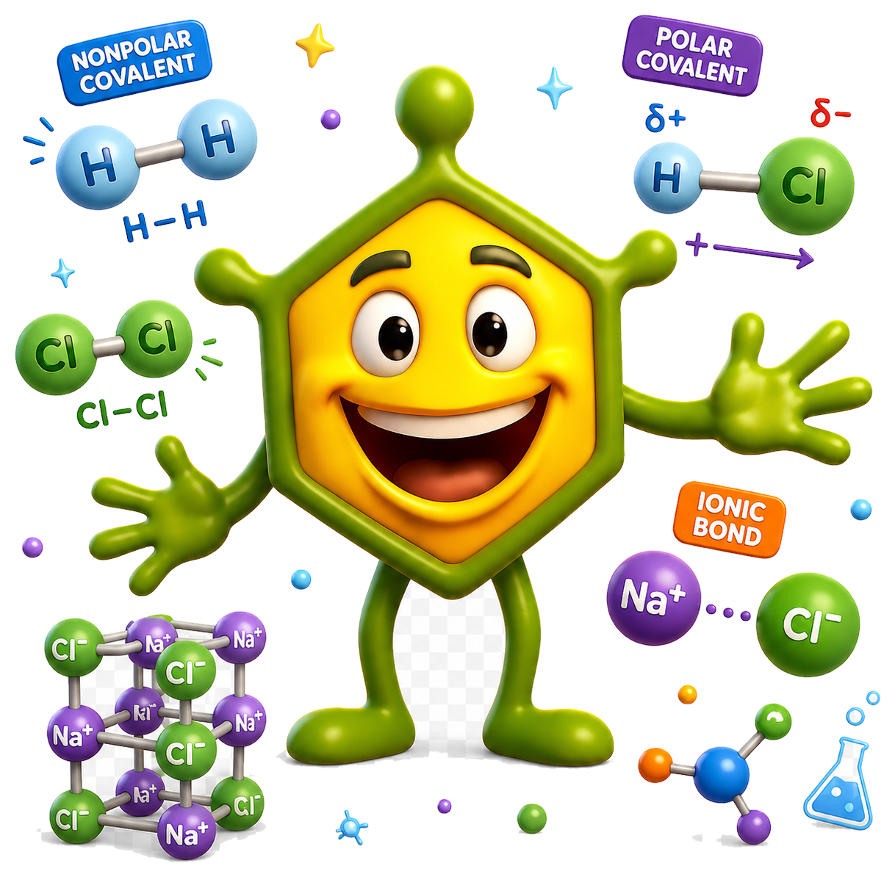

1
Regra do octeto
Você começa pelos elétrons de valência, distribuição eletrônica e estruturas de Lewis.
Entrar no modelo 1
🧭 Trilha interativa de aprendizagemDo octeto ao comportamento real: você acompanha como elétrons e núcleos se reorganizam, por que a energia diminui quando uma ligação se forma e como isso afeta polaridade, ebulição e solubilidade.
A trilha mostra que a regra do octeto é útil, mas a explicação moderna da ligação envolve energia, distribuição eletrônica, geometria e interações.
Você percorre três modelos conectados. Cada etapa explica uma parte da ligação química e mostra por que avançamos de uma regra inicial para uma visão mais próxima do comportamento real da matéria.
Elétrons e núcleos se reorganizam até uma configuração de menor energia.
Você começa pelos elétrons de valência, distribuição eletrônica e estruturas de Lewis.
Você calcula ΔEN, visualiza a escala de tipo de ligação, interpreta dipolos e geometria.
Você conecta ligação química a energia, interações, massa molar, ebulição, solubilidade e hidratação.
Ao aproximar dois átomos, atrações entre elétrons e núcleos podem diminuir a energia potencial. Se os átomos chegam perto demais, repulsões núcleo-núcleo e elétron-elétron aumentam muito a energia.
Use o controle para aproximar os átomos. O ponto azul no gráfico mostra a energia potencial aproximada. O mínimo da curva representa uma distância de equilíbrio: é uma forma visual de entender por que menor energia significa maior estabilidade.
Você começa pelos elétrons de valência, distribuição eletrônica e estruturas de Lewis.
Entrar no modelo 1Você calcula ΔEN, interpreta dipolos e visualiza estruturas 3D com JSmol/fallback.
Entrar no modelo 2Você conecta ligação química a solubilidade, ponto de ebulição e forças intermoleculares.
Entrar no modelo 3